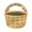

Saltar al contenido
Discos
Sessions
Eventos
Archivo

LA VACA
LOCA
START / STOP
LIGHT
TEMPO
0.0%
+8
+4
0
-4
-8
RESET
0:00
0:00
← Volver
Biblioteca
Selecciones de La Vaca Loca
Tocadiscos
Biblioteca
BIBLIOTECA
⌄
Buscar
Género
Todos
Activa JavaScript para explorar la colección y escuchar los previews.
Reproducir
Abrir tocadiscos ↗
Ampliar
Cerrar ×